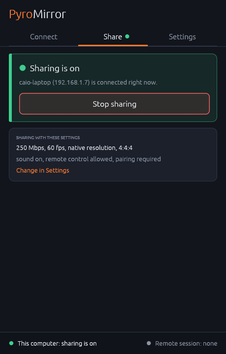
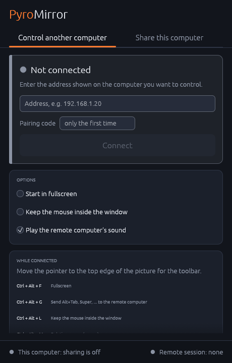
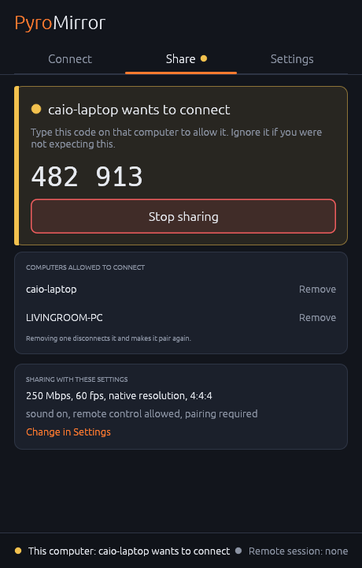

PyroMirror streams a desktop between two computers over Ethernet using the PyroWave GPU codec: every frame stands alone, so a lost packet costs a blurry patch instead of a stalled picture.

Open source, for Windows and Linux, with the same window on both.
Video is encoded and decoded on the GPU with PyroWave, in full-colour 4:4:4 so text stays crisp, at up to hundreds of megabits per second.
Control the remote computer and hear what it plays. Keys are sent as physical keys, so the remote keyboard layout applies.
The first time a computer connects, the host shows a one-time code to type on it. After that the two remember each other.
Pick "Control another computer" or "Share this computer", press the button. It always shows whether sharing is on.
Fullscreen, keyboard grab, mouse lock, relative mouse for games, mute and disconnect, plus live frame rate, bitrate and packet size, behind a small handle at the top edge that you can drag out of the way.
Desktop Duplication on Windows; the desktop portal and PipeWire on Linux, for GNOME and KDE on Wayland.
Install PyroMirror on both computers, then:
On the computer you want to control, open the Share tab and press Start sharing. It shows the address to connect to.
On the other computer, choose Add a computer, enter that address, and type the pairing code that appears on the first computer. It is saved, so next time it is one click.
The remote desktop opens in its own window. Move the pointer to the top edge for the menu.


Every release is published on GitHub with packages for each system. The newest one is at the top of the page.
Pick the file for your system:
| System | Package | Install |
|---|---|---|
| Windows 10 / 11 | MSI installer | Run it; adds a Start menu entry |
| Windows, portable | Zip archive | Unzip, run pyromirror.exe |
| Debian / Ubuntu 24.04+ | .deb package | sudo apt install ./pyromirror_*.deb |
| Fedora 40+ | .rpm package | sudo dnf install ./pyromirror-*.rpm |
| Arch Linux | Pacman package | sudo pacman -U pyromirror-*.pkg.tar.zst |
| Other Linux | Tarball | Unpack, run ./pyromirror |
PyroMirror is young. What it needs, and what it does not do yet: